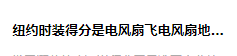

1、 viewport
<meta name="viewport" content="width=device-width,initial-scale=1.0,minimum-scale=1.0,maximum-scale=1.0,user-scalable=no" />
- width: Establece el ancho del viewport, puede ser un entero positivo o la cadena device-width
- device-width: Ancho del dispositivo
- height: Establece la altura del viewport; normalmente si se establece el ancho, la altura se resuelve automáticamente, por lo que no es necesario configurarla
- initial-scale: Relación de escala predeterminada (escala inicial), es un número que puede tener decimales
- minimum-scale: Relación de escala mínima permitida para el usuario, es un número que puede tener decimales
- maximum-scale: Relación de escala máxima permitida para el usuario, es un número que puede tener decimales
- user-scalable: Si se permite el escalado manual
Pregunta adicional: ¿Cómo manejar el problema de que 1px se renderice como 2px en dispositivos móviles?
1. Tratamiento local
El atributo viewport en la etiqueta meta, con initial-scale configurado en 1
Usar rem según el estándar del diseño y, además, usar scale(0.5) de transform para reducirlo a la mitad;
2. Tratamiento global
El atributo viewport en la etiqueta meta, con initial-scale configurado en 0.5
Basta con usar rem según el estándar del diseño.
2. Varias formas de cross-domain
Primero, entendamos la política del mismo origen del navegador.
La política de mismo origen/SOP (Same origin policy) es una convención introducida en el navegador por Netscape en 1995. Es la función de seguridad más central y básica del navegador. Si falta la política de mismo origen, el navegador es fácilmente vulnerable a ataques como XSS, CSRF, etc. El llamado mismo origen significa que 'protocolo + dominio + puerto' son idénticos; incluso si dos dominios diferentes apuntan a la misma dirección IP, no son del mismo origen.
Entonces, ¿cómo resolver el problema del cross-domain?
1. Cross-domain mediante jsonp, implementación nativa:
<script>
var script = document.createElement('script');
script.type = 'text/javascript';
// 传参并指定回调执行函数为onBack
script.src = 'http://www.....:8080/login?user=admin&callback=onBack';
document.head.appendChild(script);
// 回调执行函数
function onBack(res) {
alert(JSON.stringify(res));
}
</script>
2. Cross-domain mediante document.domain + iframe
Esta solución solo se aplica a escenarios de cross-domain donde el dominio principal es el mismo y los subdominios son diferentes.
1.) Ventana principal: (http://www.domain.com/a.html)
<iframe id="iframe" src="http://child.domain.com/b.html"></iframe> <script> document.domain = 'domain.com'; var user = 'admin'; </script>
2.) Subventana: (http://child.domain.com/b.html)
<script>
document.domain = 'domain.com';
// 获取父窗口中变量
alert('get js data from parent ---> ' + window.parent.user);
</script>
Desventaja: consulte la optimización de renderizado y carga a continuación.
3. Cross-domain mediante proxy nginx
4. Cross-domain mediante proxy middleware de Node.js
5. El backend establece dominios seguros en la información de los encabezados.
3. Optimización del renderizado
1. Prohibir el uso de iframe (bloquea el evento onload del documento padre).
- El iframe bloquea el evento Onload de la página principal;
- Los programas de rastreo de los motores de búsqueda no pueden interpretar este tipo de página, lo que es perjudicial para el SEO;
- El iframe y la página principal comparten el grupo de conexiones, y el navegador limita las conexiones al mismo dominio, por lo que afecta la carga paralela de la página.
Antes de usar iframe, es necesario considerar estos dos inconvenientes. Si se necesita usar iframe, lo mejor es agregar dinámicamente el valor del atributo src al iframe mediante JavaScript, lo que permite evitar los dos problemas anteriores.
2. Prohibir el uso de imágenes GIF para lograr efectos de carga (reduce el consumo de CPU y mejora el rendimiento del renderizado);
3. Usar código CSS3 en lugar de animaciones de JS (evitar en la medida de lo posible el repintado, el reflow y el reflujo);
4. Para algunos iconos pequeños, se puede usar codificación base64 para reducir las solicitudes de red. Pero no se recomienda para imágenes grandes, ya que consume bastante CPU;
Las ventajas de los iconos pequeños son:
- 1. Reducen las solicitudes HTTP;
- 2. Evitan el cross-domain de archivos;
- 3. Los cambios se aplican de inmediato;
5. La cabecera de la páginabloqueará la página; (porque en el proceso Renderer, el hilo de JS y el hilo de renderizado son mutuamente excluyentes);
6. La cabecera de la página
7. Los href y src vacíos en la página bloquean la carga de otros recursos de la página (bloquean el proceso de descarga);
8. Gzip web, alojamiento CDN, caché de datos, servidor de imágenes;
9. Plantillas frontend con JS + datos, reducen el desperdicio de ancho de banda causado por las etiquetas HTML. El frontend guarda los resultados de las solicitudes AJAX en variables, y cada operación se realiza con variables locales, sin necesidad de solicitudes, reduciendo así el número de solicitudes.
10. Usar innerHTML en lugar de operaciones DOM, reducir la cantidad de operaciones DOM y optimizar el rendimiento de JavaScript.
11. Cuando haya muchos estilos que establecer, usar className en lugar de manipular style directamente.
12. Usar menos variables globales y almacenar en caché los resultados de la búsqueda de nodos DOM. Reducir las operaciones de lectura de E/S.
13. Evitar el uso de CSS Expression (expresiones CSS), también llamado Dynamic properties (propiedades dinámicas).
14. Precarga de imágenes, colocar las hojas de estilo en la parte superior, los scripts en la parte inferior y añadir marcas de tiempo.
15. Evitar el uso de table en el diseño principal de la página; table solo se muestra después de que su contenido se haya descargado por completo, por lo que es más lenta que el diseño con div + CSS.
Para los sitios web normales existe una idea unificada: optimizar lo más posible hacia el frontend, reducir las operaciones de base de datos y reducir la E/S de disco. Optimizar hacia el frontend significa que, sin afectar la funcionalidad y la experiencia, lo que pueda ejecutarse en el navegador no debe ejecutarse en el servidor; lo que pueda devolverse directamente desde el servidor de caché no debe ir al servidor de aplicaciones; los resultados que el programa pueda obtener directamente no deben obtenerse externamente; los datos que puedan obtenerse en la máquina local no deben obtenerse de forma remota; lo que pueda obtenerse de la memoria no debe obtenerse del disco; y lo que esté en la caché no debe consultarse en la base de datos. Reducir las operaciones de base de datos se refiere a disminuir la cantidad de actualizaciones, almacenar resultados en caché para reducir la cantidad de consultas, y hacer que su programa realice las operaciones de base de datos tanto como sea posible (por ejemplo, consultas JOIN). Reducir la E/S de disco se refiere a intentar no usar el sistema de archivos como caché, reducir la cantidad de veces que se leen y escriben archivos, etc. La optimización de programas siempre debe optimizar las partes lentas; cambiar de lenguaje no se puede 'optimizar'.
4、事件的各个阶段
1：捕获阶段 ---> 2：目标阶段 ---> 3：冒泡阶段 document ---> target目标 ----> document
Por lo tanto, la diferencia entre establecer el tercer parámetro de addEventListener como true o false ya es muy clara:
- true indica que el elemento responde al evento en la 'fase de captura' (cuando se transmite de afuera hacia adentro);
- false indica que el elemento responde al evento en la 'fase de burbujeo' (cuando se transmite de adentro hacia afuera).
5、let var const
-
let: Permite declarar variables, sentencias o expresiones cuyo ámbito está limitado a nivel de bloque. Los enlaces let no están sujetos a la elevación de variables, lo que significa que las declaraciones let no se elevan al contexto actual; la variable se encuentra en la 'zona muerta temporal' desde el inicio del bloque hasta que se procesa su inicialización.
-
var: El ámbito de las variables declaradas está limitado al contexto de su declaración, pero las variables no declaradas siempre son globales. Dado que las declaraciones de variables (y otras declaraciones) siempre se procesan antes de ejecutar cualquier código, declarar una variable en cualquier parte del código siempre equivale a declararla al comienzo del código.
-
const declara una referencia de solo lectura a un valor (es decir, un puntero). Aquí hay que presentar los tipos comunes de JS: String, Number, Boolean, Array, Object, Null, Undefined. Entre ellos, los tipos básicos son Undefined, Null, Boolean, Number, String y se almacenan en la pila; los tipos compuestos son Array, Object y se almacenan en el montón. Cuando el valor de los datos básicos cambia, el puntero correspondiente también cambia; por lo tanto, si se declara un tipo de datos básico con const y luego se cambia su valor, se producirá un error. Por ejemplo, const a = 3; al hacer a = 5, se obtendrá un error; pero si es un tipo compuesto, si solo se cambia uno de sus elementos Value, seguirá funcionando con normalidad.
6. Funciones flecha
La sintaxis es más corta que la de las expresiones de función, y no vinculan su propio this, arguments, super o new.target. Estas expresiones de función son las más adecuadas para funciones que no son métodos, y no pueden utilizarse como constructores.
7. Desordenar rápidamente un array
var arr = [1,2,3,4,5,6,7,8,9,10];
arr.sort(function(){
return Math.random() - 0.5;
})
console.log(arr);
Explicación aquí: (mi capacidad para organizar el lenguaje es insuficiente, por favor no critiquen)

Primero, cuando el valor de return:
- es menor que 0, entonces a se ordenará antes que b;
- Si es igual a 0, la posición relativa de a y b permanece sin cambios;
- Si es mayor que 0, b se colocará antes de a;
Aquí notarás que al inicio el array está en orden ascendente. Cada vez que se realiza una ordenación, primero se genera un número aleatorio (ten en cuenta que cada "ordenación" aquí se refiere a que cada recuadro rojo es una ordenación, con 9 ordenaciones en total; una sola ordenación puede incluir múltiples comparaciones);
Cuando el número aleatorio de una ordenación es mayor que 0.5, se realizará una segunda comparación. Cuando el segundo número aleatorio sigue siendo mayor que 0.5, se realizará otra comparación más, hasta que el número aleatorio sea mayor que 0.5 o se haya ordenado hasta la primera posición;
Cuando el número aleatorio de una ordenación es menor que 0.5, los índices de los dos elementos que se comparan actualmente no cambiarán y se continúa con la siguiente ordenación;
8. Tipografía font-family
@ 宋体 SimSun
@ 黑体 SimHei
@ 微软雅黑 Microsoft Yahei
@ 微软正黑体 Microsoft JhengHei
@ 新宋体 NSimSun
@ 新细明体 MingLiU
@ 细明体 MingLiU
@ 标楷体 DFKai-SB
@ 仿宋 FangSong
@ 楷体 KaiTi
@ 仿宋_GB2312 FangSong_GB2312
@ 楷体_GB2312 KaiTi_GB2312
@
@ 说明：中文字体多数使用宋体、雅黑，英文用Helvetica
body { font-family: Microsoft Yahei,SimSun,Helvetica; }
9. Etiquetas meta que pueden ser útiles
<!-- 设置缩放 --> <meta name="viewport" content="width=device-width, initial-scale=1, user-scalable=no, minimal-ui" /> <!-- 可隐藏地址栏，仅针对IOS的Safari（注：IOS7.0版本以后，safari上已看不到效果） --> <meta name="apple-mobile-web-app-capable" content="yes" /> <!-- 仅针对IOS的Safari顶端状态条的样式（可选default/black/black-translucent ） --> <meta name="apple-mobile-web-app-status-bar-style" content="black" /> <!-- IOS中禁用将数字识别为电话号码/忽略Android平台中对邮箱地址的识别 --> <meta name="format-detection"content="telephone=no, email=no" />
Otras etiquetas meta
<!-- 启用360浏览器的极速模式(webkit) --> <meta name="renderer" content="webkit"> <!-- 避免IE使用兼容模式 --> <meta http-equiv="X-UA-Compatible" content="IE=edge"> <!-- 针对手持设备优化，主要是针对一些老的不识别viewport的浏览器，比如黑莓 --> <meta name="HandheldFriendly" content="true"> <!-- 微软的老式浏览器 --> <meta name="MobileOptimized" content="320"> <!-- uc强制竖屏 --> <meta name="screen-orientation" content="portrait"> <!-- QQ强制竖屏 --> <meta name="x5-orientation" content="portrait"> <!-- UC强制全屏 --> <meta name="full-screen" content="yes"> <!-- QQ强制全屏 --> <meta name="x5-fullscreen" content="true"> <!-- UC应用模式 --> <meta name="browsermode" content="application"> <!-- QQ应用模式 --> <meta name="x5-page-mode" content="app"> <!-- windows phone 点击无高光 --> <meta name="msapplication-tap-highlight" content="no">
10. Eliminar el parpadeo de transición
.css {
-webkit-transform-style: preserve-3d;
-webkit-backface-visibility: hidden;
-webkit-perspective: 1000;
}
Las animaciones de transición (cuando no se ha activado la aceleración por hardware) pueden presentar temblores. La solución anterior es solo una forma de activar la aceleración por hardware cambiando la perspectiva; otra forma de activar la aceleración por hardware:
.css {
-webkit-transform: translate3d(0,0,0);
-moz-transform: translate3d(0,0,0);
-ms-transform: translate3d(0,0,0);
transform: translate3d(0,0,0);
}
Activar la aceleración por hardware
Las formas más comunes: translate3d, translateZ, transform
La propiedad opacity / animaciones de transición (la capa compuesta solo se crea durante la ejecución de la animación; si la animación no ha comenzado o ha terminado, el elemento vuelve a su estado anterior)
La propiedad will-change (esta es relativamente poco conocida), generalmente se usa junto con opacity y translate (y según las pruebas, aparte de las propiedades mencionadas anteriormente que pueden activar la aceleración por hardware, otras propiedades no se convierten en capas compuestas).
Inconvenientes: la aceleración por hardware puede provocar un uso excesivo de la CPU y un mayor consumo de batería; por lo tanto, evita usar la aceleración por hardware de forma indiscriminada.
11、android 4.x bug
- 1. El navegador integrado del Samsung Galaxy S4 no admite la forma abreviada de border-radius
- 2. Al establecer border-radius y color de fondo al mismo tiempo, el color de fondo se desborda hacia las partes fuera de los bordes redondeados
- 3. En algunos teléfonos (como Samsung), los enlaces a admiten el evento de mouse :visited, es decir, después de visitar el enlace, el texto se vuelve morado
- 4. Android no puede reproducir múltiples elementos de audio a la vez
- 5. border-radius falla en Oppo
12. JS para detectar el origen del dispositivo
// 判断移动端设备
function deviceType(){
var ua = navigator.userAgent;
var agent = ["Android", "iPhone", "SymbianOS", "Windows Phone", "iPad", "iPod"];
for(var i=0; i<len,len = agent.length; i++){
if(ua.indexOf(agent[i])>0){
break;
}
}
}
deviceType();
window.addEventListener('resize', function(){
deviceType();
})
// 判断微信浏览器
function isWeixin(){
var ua = navigator.userAgent.toLowerCase();
if(ua.match(/MicroMessenger/i)=='micromessenger'){
return true;
}else{
return false;
}
}
13. Los elementos audio y video no pueden reproducirse automáticamente en iOS y Android
Motivo:Debido a que los principales navegadores han optimizado para ahorrar datos, no permiten la reproducción automática cuando el usuario no ha realizado ninguna acción (interacción);
//音频，写法一
<audio src="music/bg.mp3.html" autoplay loop controls>你的浏览器还不支持哦</audio>
//音频，写法二
<audio controls="controls">
<source src="music/bg.ogg.html" type="audio/ogg"></source>
<source src="music/bg.mp3.html" type="audio/mpeg"></source>
优先播放音乐bg.ogg，不支持在播放bg.mp3
</audio>
//JS绑定自动播放（操作window时，播放音乐）
$(window).one('touchstart', function(){
music.play();
})
//微信下兼容处理
document.addEventListener("WeixinJSBridgeReady", function () {
music.play();
}, false);
//小结
//1.audio元素的autoplay属性在IOS及Android上无法使用，在PC端正常；
//2.audio元素没有设置controls时，在IOS及Android会占据空间大小，而在PC端Chrome是不会占据任何空间；
//3.注意不要遗漏微信的兼容处理需要引用微信JS；
14. CSS para mostrar desbordamiento de texto en una sola línea ...
Vamos directo al efecto: en comparación con el manejo del desbordamiento de texto en múltiples líneas, una sola línea es mucho más simple y más fácil de entender.

Método de implementación:
overflow: hidden; text-overflow:ellipsis; white-space: nowrap;
Por supuesto, también hay que añadir la propiedad width para ser compatible con algunos navegadores.
15. Implementar el desbordamiento de texto en varias líneas...
Efecto:

Método de implementación:
display: -webkit-box; -webkit-box-orient: vertical; -webkit-line-clamp: 3; overflow: hidden;
Ámbito de aplicación:
Debido a que utiliza propiedades de extensión CSS de WebKit, este método es adecuado para navegadores WebKit y dispositivos móviles;
Nota:
1. -webkit-line-clamp se usa para limitar el número de líneas de texto que se muestran en un elemento de bloque. Para lograr este efecto, debe combinarse con otras propiedades de WebKit. Propiedades combinadas comunes:
2. display: -webkit-box; Propiedad que debe combinarse, muestra el objeto como un modelo de caja flexible.
3. -webkit-box-orient Propiedad que debe combinarse, establece u obtiene la disposición de los elementos secundarios del objeto de caja flexible.
Si crees que esto no es lo suficientemente bonito, sigue mirando el efecto a continuación:

¿No es esto lo que querías?
Método de implementación:
div {
position: relative;
line-height: 20px;
max-height: 40px;
overflow: hidden;
}
div:after {
content: "..."; position: absolute; bottom: 0; right: 0; padding-left: 40px;
background: -webkit-linear-gradient(left, transparent, #fff 55%);
background: -o-linear-gradient(right, transparent, #fff 55%);
background: -moz-linear-gradient(right, transparent, #fff 55%);
background: linear-gradient(to right, transparent, #fff 55%);
}
No te centres solo en comer; presta atención al apetito. Este método tiene un inconveniente: [aparecen puntos suspensivos incluso cuando no se supera la línea], ¿no es feo? No hay más remedio; solo se puede optimizar este método combinándolo con JS.
Nota:
- 1. Establecer height como un múltiplo entero de line-height para evitar que el texto desbordado quede expuesto.
- 2. Añadir un fondo degradado a p::after para evitar que el texto se muestre solo a la mitad.
- 3. Dado que IE6-7 no muestran el contenido, es necesario añadir una etiqueta para la compatibilidad con IE6-7 (como:…); para la compatibilidad con IE8, es necesario reemplazar ::after por :after.
16. Hacer que el contenido de imagen y texto no se pueda copiar
Supongo que todos están familiarizados con esto. A veces [ya sabes lo que digo], para buscar respuestas rápidamente, pero por nada del mundo te dejan copiar:
-webkit-user-select: none; -ms-user-select: none; -moz-user-select: none; -khtml-user-select: none; user-select: none;
17. Centrar una caja vertical y horizontalmente
¡Parece que esta pregunta es obligatoria en las entrevistas! De todos modos, yo siempre la pregunto, ¡jaja! En realidad, no importa cuántas formas de implementación existan; ¡con tal de que puedas implementarla, es suficiente!
Se proporcionan 4 métodos:
-
1. Posicionamiento, cuando se conocen el ancho y el alto de la caja: position: absolute; left: 50%; top: 50%; margin-left: -la mitad del ancho propio; margin-top: -la mitad de la altura propia;
-
2. Diseño table-cell: contenedor padre display: table-cell; vertical-align: middle; elemento hijo margin: 0 auto;
-
3. Posicionamiento + transform; adecuado cuando el ancho y el alto de la caja secundaria no están definidos; (este es mi método habitual)
position: relative / absolute; /*top和left偏移各为50%*/ top: 50%; left: 50%; /*translate(-50%,-50%) 偏移自身的宽和高的-50%*/ transform: translate(-50%, -50%); 注意这里启动了3D硬件加速哦 会增加耗电量的 （至于何是3D加速 请看浏览器进程与线程篇）
-
4. Diseño flex
父级： /*flex 布局*/ display: flex; /*实现垂直居中*/ align-items: center; /*实现水平居中*/ justify-content: center;
Añadimos un método más para centrar horizontalmente:margin-left : 50% ; transform: translateX(-50%);
Algunas páginas web, para respetar la originalidad, añaden una nota de fuente al texto copiado. ¿Cómo se hace? ¡Buena pregunta! Estaba esperando esta pregunta -_- .
Idea general:
- 1. Escuchar el evento copy en el área de respuestas y evitar el comportamiento predeterminado de este evento.
- 2. Obtener el contenido seleccionado (window.getSelection()), añadir la información de derechos de autor y luego establecerlo en el portapapeles (clipboarddata.setData()).
18. Cambiar el color y el tamaño de la fuente del placeholder
En realidad, este método solo funciona en PC; en dispositivos reales no sirve para nada. En ese momento me puse a llorar. Pero aun así lo publico.
input::-webkit-input-placeholder {
/* WebKit browsers */
font-size:14px;
color: #333;
}
input::-moz-placeholder {
/* Mozilla Firefox 19+ */
font-size:14px;
color: #333;
}
input:-ms-input-placeholder {
/* Internet Explorer 10+ */
font-size:14px;
color: #333;
}
19. La forma más rápida de obtener el valor máximo de un array
var arr = [ 1,5,1,7,5,9]; Math.max(...arr) // 9
20. Una forma más corta de eliminar duplicados en un array
[...new Set([2,"12",2,12,1,2,1,6,12,13,6])] // [2, "12", 12, 1, 6, 13]
21. Cuando los componentes padre e hijo de Vue están anidados, el orden en que se disparan los ganchos del ciclo de vida dentro de los componentes
Primero, podemos tratar el componente hijo como una función. Cuando el componente padre importa el componente hijo, es como si se declarara y se cargara esta función; solo se ejecuta esta función (el componente hijo) cuando se la llama. Entonces, ¿cuál es el orden de activación de los hooks del ciclo de vida entre los componentes padre e hijo? Como se muestra a continuación:

Fuente del artículo: https://segmentfault.com/a/1190000013331105